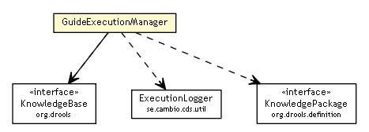

se.cambio.cds.controller.execution
Class GuideExecutionManager

java.lang.Object
 se.cambio.cds.controller.execution.GuideExecutionManager
se.cambio.cds.controller.execution.GuideExecutionManager
public class GuideExecutionManager
- extends Object
| Methods inherited from class java.lang.Object |
clone, equals, finalize, getClass, hashCode, notify, notifyAll, toString, wait, wait, wait |
_knowledgeBase
public org.drools.KnowledgeBase _knowledgeBase
executeGuides
public static void executeGuides(Collection<GuideDTO> guideDTOs,
Calendar date,
Collection<Object> workingMemoryObjects,
ExecutionLogger executionLogger)
throws InternalErrorException
- Throws:
InternalErrorException
executeGuides
public static void executeGuides(org.drools.KnowledgeBase knowledgeBase,
Calendar date,
Collection<Object> workingMemoryObjects,
ExecutionLogger executionLogger)
throws InternalErrorException
- Throws:
InternalErrorException
getKnowledgeBase
public static org.drools.KnowledgeBase getKnowledgeBase(Collection<GuideDTO> guideDTOs)
throws InternalErrorException
- Throws:
InternalErrorException
generateKnowledgeBase
public static org.drools.KnowledgeBase generateKnowledgeBase(Collection<GuideDTO> guideDTOs)
getKnowledgePackage
public static org.drools.definition.KnowledgePackage getKnowledgePackage(byte[] guiaCompilada)
getGuideString
public static String getGuideString(Collection<GuideDTO> guides)
getDelegate
public static GuideExecutionManager getDelegate()
Copyright © 2013 Cambio. All Rights Reserved.